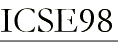
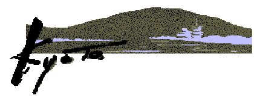
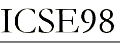
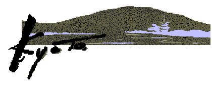
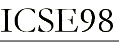
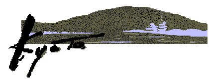

in

in

in
Sponsored by
Since ICSE's founding, politics and technology have converged to shatter once formidable barriers to international cooperation. The collapse of the Berlin Wall symbolizes the end of the Cold War, and links in a Web page are a metaphor for our enhanced capacity for global information exchange.
In this spirit, we have worked hard to ensure that ICSE98 will see an unprecedented increase in the level of international participation. In particular, we will give a greater voice to members from the Asian-Pacific region, an area under-represented in the past. Yet our outreach must extend beyond geography.
As we continue to build bridges to other software disciplines, researchers and practitioners in allied fields will benefit from an understanding of the contributions that software engineering can make to their work. In turn, we must address their problems in our research. New collaborations between academia and industry will also enrich ICSE98 and our profession as a whole.
I hope you will take advantage of this unique opportunity to meet new colleagues, exchange ideas, and explore the nearly limitless possibilities that lie ahead. Join me in Kyoto for ICSE98 and share the excitement that comes from forging new links.
For more information:
| Technical Papers | Report research or practical experiences | 20 August 1997Åielectronic abstractÅj
3 September 1997 (full paper due) |
| Panels | Discuss and debate pressing issues | 20 September 1997 |
| Software Engineering in Organizations: Lessons and Status Reports | Summaries of work taking place in institutions, organizations, or groups | 1 December 1997 |
| Tutorials | Teach Software Engineering techniques and theory | 6 October 1997 (proposal) |
| Workshops | Discuss focused topic in a small-group setting | 1 July 1997 (proposal) |
| Posters & Research Demonstrations | Present late-breaking results and ongoing work | 1 January 1998 |
| Doctoral Symposium | Discuss Ph.D. students' work | 1 November 1997 |
| Asia Pacific Forum | Discuss Asia-Pacific Software Engineering Issues | 1 July 1997 |
| Exhibition | Show commercial product and tools | Contact to icseexpo@po.iijnet.or.jp |
| General Chair | Koji Torii (NAIST) | torii@is.aist-nara.ac.jp |
| Technical Committee | Takuya Katayama (JAIST) | katayama@jaist.ac.jp |
| David Notkin (U.of Washington) | notkin@cs.washington.edu | |
| Program Committee | Kokichi Futatsugi (JAIST) | kokichi@jaist.ac.jp |
| Richard Kemmerer (UCSB) | kemm@cs.ucsb.edu | |
| Asia Pacific | Dines Bjorner (UNU/IIST) | db@iist.unu.edu |
| Koichi Kishida (SRA) | k2@sra.co.jp | |
| Operating Committee | Norihisa Doi (Keio U.) | doi@keio.ac.jp |
| Treasurer | Seishiro Tsuruho (NTT Data) | tsuruhos@noa.nttdata.co.jp |
| Secretariat | Masaki Koyama (NAIST) | koyama@itc.aist-nara.ac.jp |